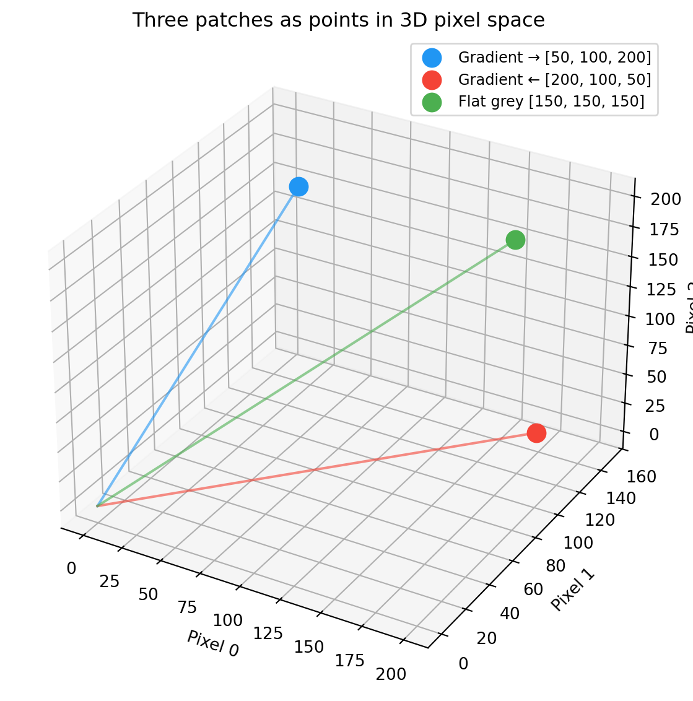

Understand how image patches become vectors, and how the dot product measures agreement between two patches — the foundation for all normalised template matching.
29.2 Pixels as vectors
An image patch is a 2D grid of pixel values. For math, we flatten it into a 1D vector — just a list of numbers. A 3 × 3 patch with 9 pixels becomes a point in 9-dimensional space.
This is not an abstraction — it is literally how OpenCV’s template matching works internally. It flattens the template and each scene patch into vectors, then compares them.
Once we see patches as vectors, all of linear algebra applies:
Comparing two patches = measuring the distance or angle between two vectors.
Brightness change = adding a vector to shift the point in space.
Contrast change = scaling the vector (stretching it longer or shorter).
For visualisation we use 3-pixel patches (3D space) so we can actually plot them. Everything generalises to any number of pixels.
import numpy as npimport matplotlib.pyplot as pltfrom mpl_toolkits.mplot3d import Axes3D # noqa: F401 needed for 3D projectionCOLORS = {"primary": "#2196F3","secondary": "#4CAF50","result": "#FFC107","highlight": "#F44336","transform": "#9C27B0","gradient": "#FF9800",}def make_gradient_patch(size=3, start=100, end=200): row = np.linspace(start, end, size)return np.tile(row, (size, 1))patch = make_gradient_patch(size=3, start=50, end=200)print("2D patch shape :", patch.shape)print("Flattened :", patch.flatten())print(f"This vector is a point in {patch.size}-dimensional space.")
2D patch shape : (3, 3)
Flattened : [ 50. 125. 200. 50. 125. 200. 50. 125. 200.]
This vector is a point in 9-dimensional space.
Same data — 2D image vs flattened 9-D vector. The patch is just a reshaped view of the vector.
29.3 Patches as points in pixel space
Three different 3-pixel patches occupy different positions in 3D pixel-value space:
patch_a = np.array([50, 100, 200]) # dark → brightpatch_b = np.array([200, 100, 50]) # bright → dark (reversed)patch_c = np.array([150, 150, 150]) # flat grey (no pattern)fig = plt.figure(figsize=(8, 6))ax = fig.add_subplot(111, projection="3d")for vec, name, color in [(patch_a, "Gradient →", COLORS["primary"]), (patch_b, "Gradient ←", COLORS["highlight"]), (patch_c, "Flat grey", COLORS["secondary"])]: ax.scatter(*vec, s=120, color=color, label=f"{name}{vec.tolist()}", zorder=5) ax.plot([0, vec[0]], [0, vec[1]], [0, vec[2]], color=color, linewidth=1.5, alpha=0.6)ax.set_xlabel("Pixel 0")ax.set_ylabel("Pixel 1")ax.set_zlabel("Pixel 2")ax.set_title("Three patches as points in 3D pixel space")ax.legend(fontsize=9)plt.tight_layout()plt.show()

Three patches as points in 3D pixel space. Distance encodes dissimilarity.
29.4 Dot product
The dot product of two vectors answers: how much do these two vectors point in the same direction?
For image patches, it tells you how much two patches “agree” — pixel by pixel, do they go bright in the same places and dark in the same places?
For \vec a = [a_1, \ldots, a_n] and \vec b = [b_1, \ldots, b_n]:
\vec a \cdot \vec b \;=\; \sum_{i=1}^n a_i b_i
\;=\; a_1 b_1 + a_2 b_2 + \cdots + a_n b_n
Multiply corresponding elements, then sum.
The dot product has an equivalent geometric definition:
\vec a \cdot \vec b \;=\; \|\vec a\|\,\|\vec b\|\,\cos\theta
where \theta is the angle between the two vectors. This connects the algebraic formula (multiply and sum) to geometry (angles). Next chapter uses this to derive cosine similarity.
29.5 Dot product in action
template = np.array([ 50, 150, 250], dtype=float)similar_patch = np.array([ 60, 140, 230], dtype=float)opposite_patch = np.array([250, 150, 50], dtype=float)dot_similar = np.dot(template, similar_patch)dot_opposite = np.dot(template, opposite_patch)print("Template :", template.astype(int))print("Similar patch :", similar_patch.astype(int))print("Opposite patch :", opposite_patch.astype(int))print()print(f"template · similar = {dot_similar:.0f}")print(f"template · opposite = {dot_opposite:.0f}")print()print(f"Higher dot product ({dot_similar:.0f} > {dot_opposite:.0f}) = more agreement.")print("But raw dot product also depends on magnitude — fixed in the next chapter.")
Template : [ 50 150 250]
Similar patch : [ 60 140 230]
Opposite patch : [250 150 50]
template · similar = 81500
template · opposite = 47500
Higher dot product (81500 > 47500) = more agreement.
But raw dot product also depends on magnitude — fixed in the next chapter.
Dot product = multiply corresponding pixels, then sum. Aligned values produce big positive terms; misaligned values pull the total down.
A higher dot product means more agreement between two patches. However, the raw dot product also depends on the magnitude of both vectors — a brighter patch produces a larger dot product even with the same pattern. Normalising fixes this — next chapter.
29.6 Exercises
Compute the dot product of [1, 2, 3] and [4, 5, 6] by hand, then check with np.dot.
Generate two 3 × 3 patches that look identical to the eye but have very different dot products. What’s different?
Show that np.dot(v, v) equals \sum v_i^2 — the squared length.
Take a 5 × 5 image patch from any image. Flatten it. What is the dimensionality?
29.7 Glossary
vector — ordered list of numbers; geometrically, a point or an arrow from the origin.
flatten — reshape a 2D grid into a 1D list, preserving values.
dot product — element-wise multiply and sum; \vec a \cdot \vec b = \sum a_i b_i.
pixel space — the high-dimensional space whose coordinates are the pixel values of a patch.
angle between vectors — \theta such that \cos\theta =
(\vec a \cdot \vec b)/(\|\vec a\|\|\vec b\|).